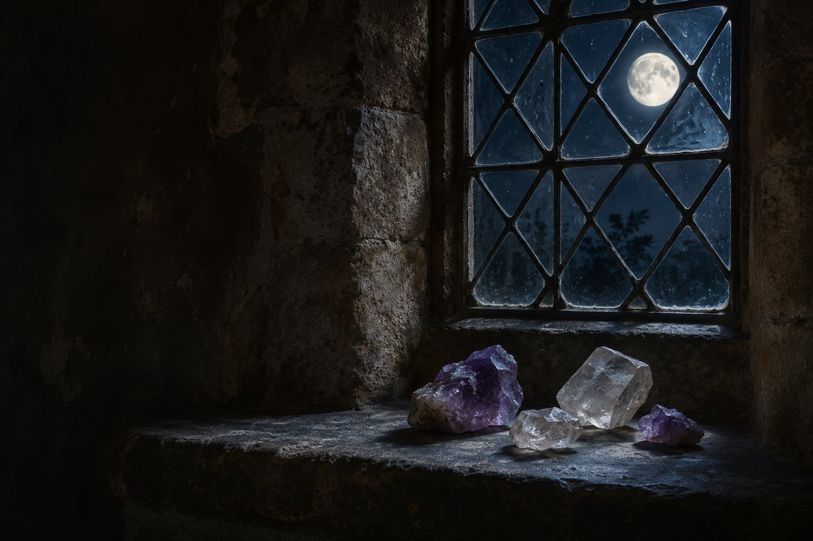
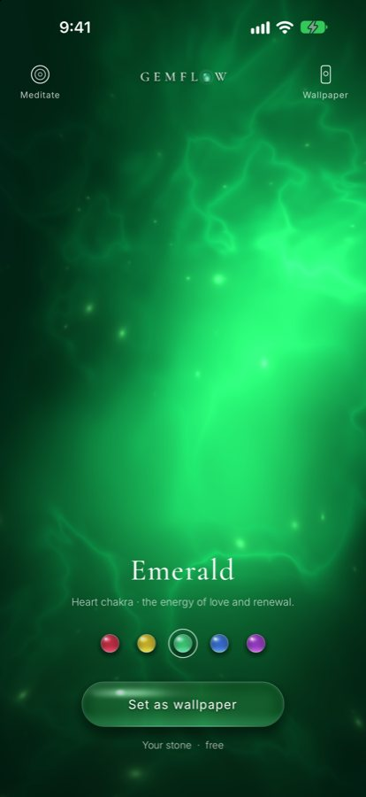
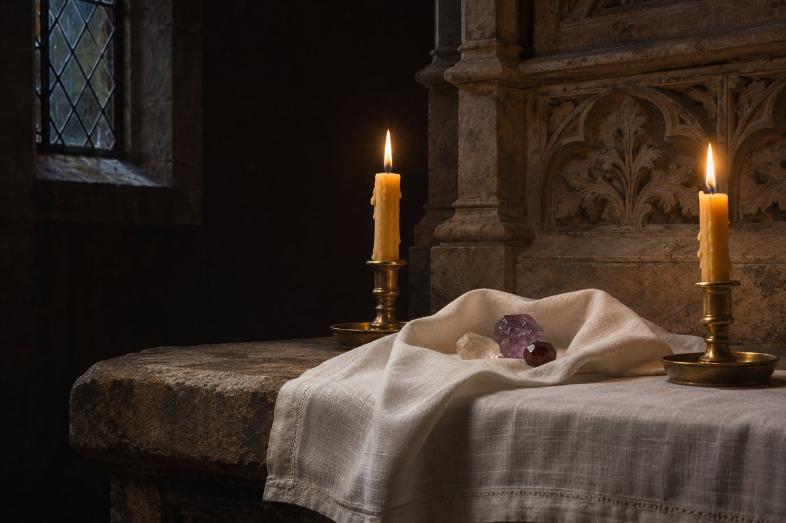
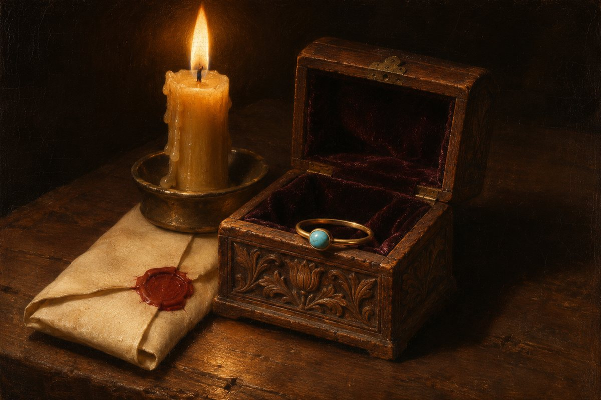
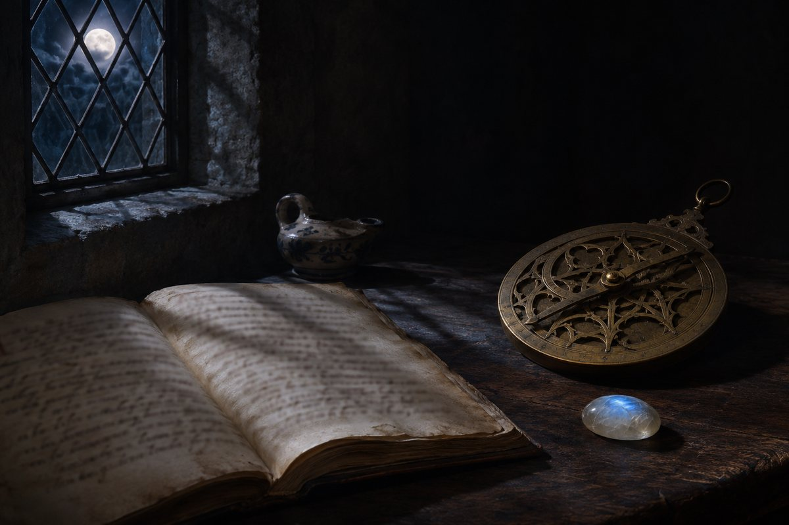
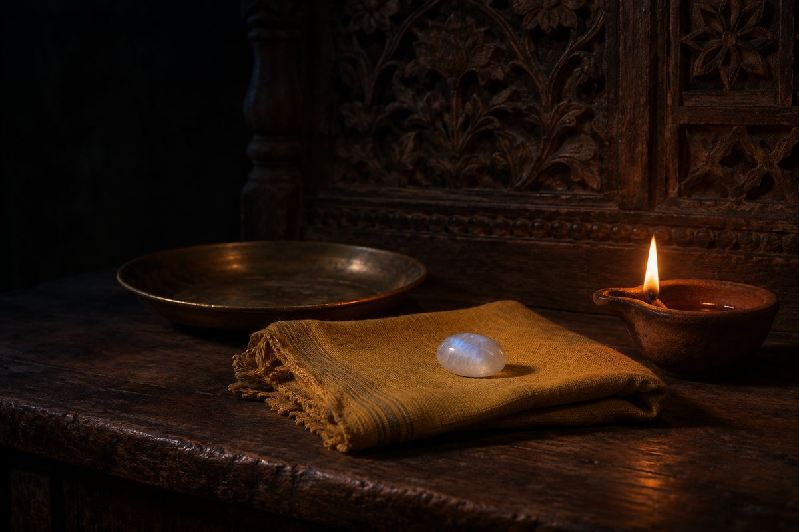

Crystal care · moonlight
How to cleanse a crystal, and why a stone can grow tired
What do you lay down when you put a crystal in the moonlight? All evening, you have carried small things that grew heavy: a conversation, someone else’s disappointment, the sentence you swallowed at dinner. Now the house is quiet. You open your hand and find the stone still there, cool against the place where your fingers close. On the windowsill, a clean cloth waits, pale as a bed turned down for someone you love.


The weight of a touch
Can something beautiful grow tired of being held?
In The Curious Lore of Precious Stones (1913), George Frederick Kunz records a medieval belief that a gem could lose its virtues through another person’s touch or even their gaze. The stone was imagined as something the world could reach into. You know that feeling: a room after an argument, a letter you cannot bring yourself to open, your mother’s ring on a day you miss her. An object stays small enough to fit in a drawer while everything around it grows enormous. Begin your cleansing by setting the crystal down and opening your fingers all the way. You have been holding more than its weight.
Clean linen
Why did a stone need to be tucked into bed?
“wrapped in a perfectly clean linen cloth and placed on the altar”
Kunz’s 1913 book preserves a restoration ritual from the fourteenth-century Lapidary attributed to Sir John Mandeville. There was clean linen. There were three Masses. At the third, a priest offered a blessing for the stones. Before the words, before the ceremony, someone had to find a clean cloth and fold it around something small. That gesture feels close to washing the sheets after a difficult week, or laying a fresh towel beside a bath. Tonight, spread a clean cloth on your windowsill and place your crystal in its center. Let the care you take with that little resting place include you.

A gift of blue
What brings the color back to something you have stopped seeing?
Kunz tells a story from Anselmus de Boot, physician to Emperor Rudolf II. A turquoise had belonged to a Spanish man for thirty years; by the time it was offered for sale, its color was gone. De Boot’s father bought it for almost nothing, then gave it to his son to test the belief that turquoise’s virtues belonged to a stone received as a gift. The son wore it, and within a month, the account says, its beauty returned. A faded stone, passed from one hand into another, became blue again. Hold your crystal tonight as something being given to you, even if you bought it yourself. Let yourself receive what you have grown used to owning.

A moon inside
What if the light has been moving all along?
“like a small millet-seed”
That was the white spot in a stone borrowed by the sixteenth-century French writer Antoine Mizauld, in the account Kunz retells in 1913. Mizauld watched the selenite or moonstone through a lunar month. The spot appeared near the top, grew, and descended, taking the moon’s changing shape. At the center, it was “round like the full moon”; as the moon waned, it withdrew. Picture him returning to look, night after night, for that little traveling light. Tonight’s window offers the same invitation to linger. Place your crystal where you can see it, and give yourself a few minutes in which nothing needs an answer from you.

The dragon’s breath
What would you hold more gently if you called it breath?
“the congealed breath of the White Dragon”
In the Japanese belief recorded by Kunz, this was what small crystals were. Breath, made solid. Something that had left a living mouth and become clear enough to hold. Read those words with a crystal resting in your palm and the familiar edges turn strange again. Think of breath clouding a cold window, the brief white shape that appears and vanishes while you stand on the warm side of the glass. Set the crystal down without rubbing or polishing it. Let its edges catch the light. For once, you can care for something without asking it to become anything else, and give yourself that same tenderness.
A square of yellow
Can cleansing begin with what you place underneath?
“never displayed for sale there, except on a yellow cloth”
Kunz writes in The Curious Lore of Precious Stones that moonstone was held sacred in India and offered for sale on yellow cloth. Such a small detail to survive: the color beneath the stone. Yellow like lamplight falling across a kitchen table after everyone else has gone to bed. Yellow like the corner of an old letter kept inside a book. For your ritual tonight, choose a clean cloth you love looking at. Lay it flat instead of clearing a hurried space among receipts and charging cables. Give the stone a place prepared for its arrival. You are allowed to prepare a little beauty for your own arrival, too.

The last sound
How do you know when the ritual is finished?
A contemporary cleansing ritual can be as quiet as a crystal resting on clean cloth in moonlight. You can also sound a singing bowl once and listen until its last note disappears. The sound gives your waiting a shape: first the clear rim of it, then the thinning shimmer, then the room again. Leave the stone where it is for a while. There is no need to keep checking it, turning it over, asking whether the night has done enough. Bring it in before morning sunlight reaches the window, especially amethyst or citrine, one of the November birthstones. When you pick it up, let the simple act of returning to it be enough for you.
A full moon ritual
What will you leave beside the window tonight?
- Choose one crystal. Hold it in your open palm while you remember the moment today that stayed with you.
- Prepare its resting place. Spread a clean cloth on a windowsill where moonlight falls, smoothing it with the care you would give a pillowcase.
- Lay the crystal down. Name what you are ready to stop carrying in one quiet sentence, then let your hand leave the stone.
- Give the room a sound. Sound a singing bowl once, or sit quietly and listen to the room until you notice something you had been too busy to hear.
- Let the night continue. Leave the crystal on its cloth while you turn toward your own evening: wash your face, fold back the sheets, go to bed.
- Return before the sun reaches it. Bring the crystal in before direct morning sunlight touches the window, especially amethyst or citrine, and hold it once before beginning your day.
When you put a crystal in the moonlight, you lay down a small weight you can hold, and practice putting down the ones you cannot.
The long road
From the altar to the windowsill
- c. 1350 · Konrad of Megenberg sets down a blessing for stones in his Book of Nature.
- 14th century · The Lapidary under Mandeville’s name gives the ritual of clean linen, the altar and three masses.
- 16th century · Antoine Mizauld watches a moonstone for one lunar month.
- 1609 · Anselmus de Boot, court physician, writes on the powers of gems.
- 1913 · George Frederick Kunz gathers these stories in The Curious Lore of Precious Stones.
- Today · A stone on a windowsill under the full moon, and a quiet moment nobody has to explain.
Your daily companion
A stone that is always clear
In Gemflow, five stones become living light on your screen, and that light never dulls and never asks to be cleansed. Touch it and it follows you. Open Meditate and it rises and settles with your breath, with real singing bowls, guqin and slow ocean waves beneath it. On the nights when your own stones are resting on the sill, this one can stay with you as part of your bedtime ritual with crystals.

Know your stones
Each stone has its own story: ruby, citrine, emerald, sapphire and amethyst. To find which one goes with which chakra, see the chakra stones and frequencies chart.
Which stone can take what
| Ruby | Water: yes. Moon: yes. Sun: yes. Warm soapy water is always safe GIA |
|---|---|
| Sapphire | Water: yes. Moon: yes. Sun: yes. Warm soapy water is always safe GIA |
| Emerald | Water: a gentle wash, no long soak. Moon: yes. Never steam or an ultrasonic cleaner GIA |
| Amethyst | Water: yes. Moon: yes. Sun: no, long strong light can fade it. No sudden heat or cold GIA |
| Citrine | Water: yes. Moon: yes. Sun: no, long strong light can fade it. No sudden heat or cold GIA |
| Selenite | Water: no, it is soft gypsum and dissolves slowly Mineral property |
| Salt | Best avoided: it can scratch soft stones and get into settings General gem care |
| Treated stones | Filled or dyed stones need gentler care. Ask your jeweler GIA |
| Works for every stone | Moonlight, sound, a clean cloth, your own breath Modern crystal practice |
When in doubt, use moonlight or sound. Neither can harm a stone.
Questions
How do I cleanse a crystal?
To cleanse a crystal, set it on a clean cloth in moonlight overnight, sound a singing bowl beside it, or rinse it briefly if the stone is water-safe. Moonlight and sound are gentle enough for every stone.
How often should I cleanse my crystals?
Most people cleanse their crystals about once a month, often at the full moon, and whenever a stone has been through a hard time with them. There is no fixed rule.
Does it have to be a full moon?
A full moon is not required to cleanse crystals. It is a modern custom that gives the ritual a rhythm. Any quiet night works, and cloud or window glass does not matter.
Which crystals should not go in water?
Soft or porous stones such as selenite should not go in water. Of Gemflow’s five stones, ruby, sapphire, amethyst and citrine tolerate water well, and emerald should have only a gentle wash.
Which crystals fade in the sun?
Amethyst and citrine can fade with long exposure to strong light, according to GIA. Take them in before the morning sun reaches them if you leave them out overnight.
What is the difference between cleansing and charging?
Cleansing a crystal means clearing what it has been holding, and charging means filling it again with an intention. In practice many people do both in one ritual, under the moon.
Do crystals really hold energy?
There is no scientific evidence that crystals hold or lose energy. The belief is very old, and people use cleansing as a ritual of care and a pause for themselves.
Did people cleanse stones in the past?
People in medieval Europe did restore stones by ritual: a lapidary quoted by Kunz (1913) describes wrapping them in clean linen and placing them on an altar for three masses. The moonlight custom is modern.
Can a crystal heal me?
A crystal is not a medical treatment. People use stones as companions for meditation, sleep rituals and quiet reflection.
Notes and sources
- George Frederick Kunz, The Curious Lore of Precious Stones (1913): “That precious stones could, under certain circumstances, lose the powers inherent in them was firmly believed in medieval times. If handled or even gazed upon by impure persons and sinners, some of the virtues of the stones departed from them.” The ritual follows, from “Le Grand Lapidaire” of Jean de Mandeville (Vienna, 1862, pp. 126-128); Kunz notes that Konrad of Megenberg gives the same benediction in his Buch der Natur.
- Kunz (1913) on Anselmus de Boot’s turquoise: “He had scarcely worn it a month, however, before it resumed its pristine beauty and daily seemed to increase in splendor.” Kunz himself doubted the tale.
- Kunz (1913) on Antoine Mizauld’s selenite or moonstone: a white mark “like a small millet-seed”, “round like the full moon”. On the moon: “supposed to have the power to conjure these evil influences and to drive off the powers of darkness”.
- Kunz (1913) on Japanese rock crystal: “the congealed breath of the White Dragon”. On moonstone in India: “never displayed for sale there, except on a yellow cloth”.
- GIA (Gemological Institute of America), care and cleaning guides for ruby, sapphire, emerald, amethyst and citrine.
- Cleansing crystals in moonlight, water or sound is a modern practice. Gemflow has not found the full moon custom in the older sources above. Gemflow is for relaxation, meditation and ritual; it is not a medical product.
© 2026 Gemflow · Home · Chakra stones chart · Chakra colors · Ruby · Amethyst